José Luis Serra
Desarrollo personal y empresarial


Sobre mí
Soy un ser humano como tú que ha vivido diferentes procesos de formación, de aprendizaje por experiencia, que sigue creciendo y formándose continuamente. A partir de mi formación y experiencia puedo acompañarte utilizando herramientas de coaching y consultoría en el proceso de desarrollarte plenamente como persona y como empresario. La base de esta propuesta la encontrarás en esta sabia frase:
“Si buscas resultados distintos,
no hagas siempre lo mismo”.
En general, los seres humanos, nos especializamos en quejarnos de los resultados e insistir una y otra vez recorriendo el mismo camino, con lo cual generalmente obtenemos los mismos resultados.
Obviamente la primera cosa a definir es ¿qué resultado busco alcanzar?, y está bueno preguntarnos ¿para qué?, ¿qué me va a aportar alcanzar este resultado?; y, ¿este aporte es bueno para mí y para las personas de mi entorno?, ¿dispongo de las capacidades y recursos necesarios para alcanzarlo?.
Estas preguntas aparentemente simples, resultan muy poderosas a la hora de analizar si lo que busco es “razonable”.
Si lo es, esto es, si el resultado buscado aporta crecimiento personal y, mejora o cuando menos no daña a mi entorno, y si considero que dispongo de las capacidades y recursos necesarios para alcanzarlo, entonces, resta definir caminos, opciones para lograrlo.
Cada camino presenta riesgos, oportunidades y desafíos, y por lo tanto enseñanzas posibles, para emprender el camino, puedo considerar todos estos elementos en mayor o menor profundidad, pero más tarde o más temprano deberé abandonar mi “zona de confort” y lanzarme a recorrer un camino desconocido o algo conocido, porque cuando se recorre el mismo camino por segunda vez, la vida suele prepararnos algunos cambios, para aprender aún de lo conocido.
Si el camino me lleva a mi resultado bien, sino es bueno sentarse, recopilar experiencias aprendidas durante este viaje, y plantearnos nuevas opciones para llegar. Lo importante es no seguir insistiendo por un camino que ya sabemos no conduce a los resultados deseados, y estar abiertos a explorar nuevas opciones.
¿Qué ofrezco?
Sobre mis competencias, soy bueno escuchando, y transmitiendo a través de la palabra. Tengo visión de procesos, y experiencia trabajando con empresarios y personas que no provienen del mundo de la empresa ayudando a definir problemas, analizar causas y proponer soluciones viables; o definir objetivos y generar planes de acción para su ejecución, los cuales pueden incluir generar nuevas opciones viables o incorporar modelos externos ya probados a nivel internacional.
Formación como Coach PNL, en gestión de empresas y en sistemas de gestión basados en:
- Normas ISO (9001 Calidad, 45001 Seguridad y Salud en el trabajo, 14001 Ambiental y 28000 Seguridad para la cadena de suministros).
- Modelo BASC
- OEC/OEA
Misión y valores
Mi misión
Trabajo junto a mis clientes, facilitando, a través de la escucha activa y del apoyo de diversas herramientas, de Coaching y de Consultoría, la mejora y el desarrollo pleno de sus capacidades personales y/u organizacionales.Valoro
- La vida, es una escuela increíble que nos enseña a través del espejo de quiénes nos rodean, de las experiencias que nos generan los caminos que vamos eligiendo.
- La escucha, sin juicio.
- El aprendizaje y la mejora continua. Para aprender hay que estar dispuesto a salir de la zona de confort, experimentar, arriesgar, observar, cambiar. Sin experiencia no hay conocimiento, aprendizaje, sólo información.
- La capacidad de adaptación. Para ello hay que poder ver la situación desde diferentes ángulos y generar opciones.
- La comunicación eficaz.
- La integridad, honestidad y coherencia.
- La capacidad de trabajar en equipo, la capacidad de pedir ayuda.
- La capacidad de brindar servicio a los demás sin olvidarse de uno mismo.
Servicios
Todos mis servicios inician con una sesión presencial o en línea para escuchar tus necesidades y expectativas, y hacerte una propuesta de trabajo concreta con sus costos asociados. Algunos de los servicios que presto se presentan a continuación:Procesos de desarrollo personal
- Sesiones de coaching presencial o en línea.
- Aplicación de herramientas de gestión para la mejora personal (gestión del tiempo, definición de objetivos y planes de acción, herramientas de Demming para la mejora personal, etc.).
Procesos de desarrollo y mejora empresarial
- Sesiones de coaching presencial o en línea.
- Aplicación de herramientas de gestión en la empresa, gestión por procesos, gestión basada en riesgos, procesos de mejora continua, modelos de gestión conforme a normas ISO, BASC, OEC/OEA.
- Consultoría para la mejora de gestión.
- Consultoría para el diagnóstico, implantación y mantenimiento de sistemas de gestión conformes a normas
- ISO, BASC, OEC/OEA. Auditorías de Sistemas de Gestión.
Consultoría
Coaching
Noticias
Procesos de mejora
Gestión por procesos
Riesgos y oportunidades
Sistemas de gestión
Contacto
Llena el formulario para contactarme acerca de propuestas, preguntas o negociables.